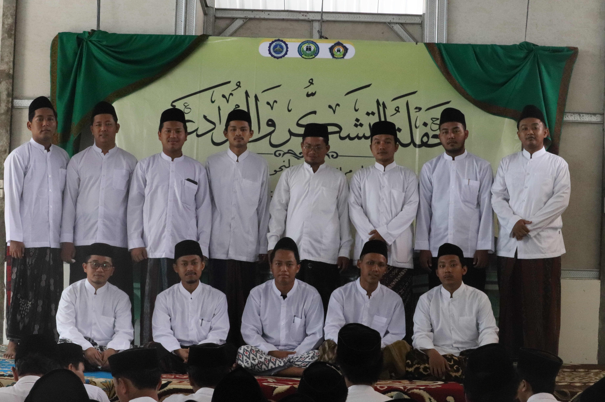

ASATIDZ
adalah istilah dalam bahasa Arab yang merujuk pada para guru atau pengajar. Dalam konteks pendidikan Islam, asatidz biasanya merujuk pada para ulama, cendekiawan, atau guru yang memiliki pengetahuan mendalam tentang agama Islam dan bertanggung jawab untuk menyampaikan ilmu kepada murid-murid mereka.
Asatidz memainkan peran penting dalam menyebarkan pengetahuan agama, membimbing umat, dan menjaga tradisi keilmuan Islam. Mereka sering kali mengajar di pesantren, madrasah, atau institusi pendidikan Islam lainnya, serta memberikan ceramah, khutbah, dan bimbingan spiritual kepada masyarakat.
Peran asatidz tidak hanya terbatas pada pengajaran, tetapi juga mencakup pembinaan karakter, memberikan nasihat, dan menjadi teladan bagi umat. Mereka sering kali dihormati dan dianggap sebagai sumber inspirasi dalam komunitas Muslim.
Dalam sejarah Islam, banyak asatidz yang terkenal karena kontribusi mereka dalam bidang ilmu pengetahuan, teologi, dan tasawuf. Mereka telah meninggalkan warisan keilmuan yang kaya dan terus dihormati hingga saat ini.
Secara keseluruhan, asatidz adalah sosok yang sangat dihormati dalam masyarakat Muslim karena peran mereka dalam menyebarkan pengetahuan agama dan membimbing umat menuju pemahaman yang lebih baik tentang Islam.
Berikut adalah para asatidz dari angkatan rushaifah :

- Ustadz 1
- Ustadz 2
- Ustadz 3
- Ustadz 4
- Ustadz 5
- Ustadz 6
- Ustadz 7
- Ustadz 8
- Ustadz 9
- Ustadz 10
- Ustadz 11
- Ustadz 12
- Ustadz 13